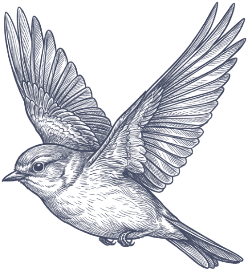
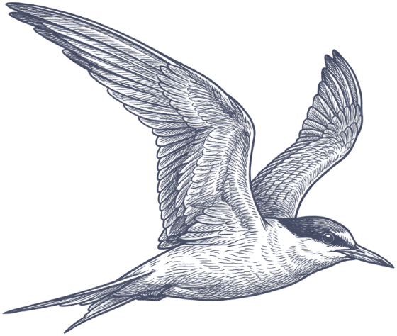
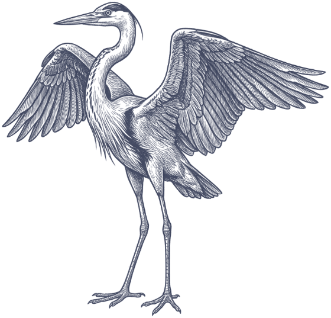
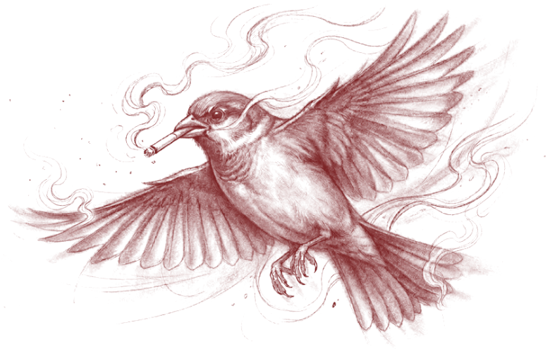
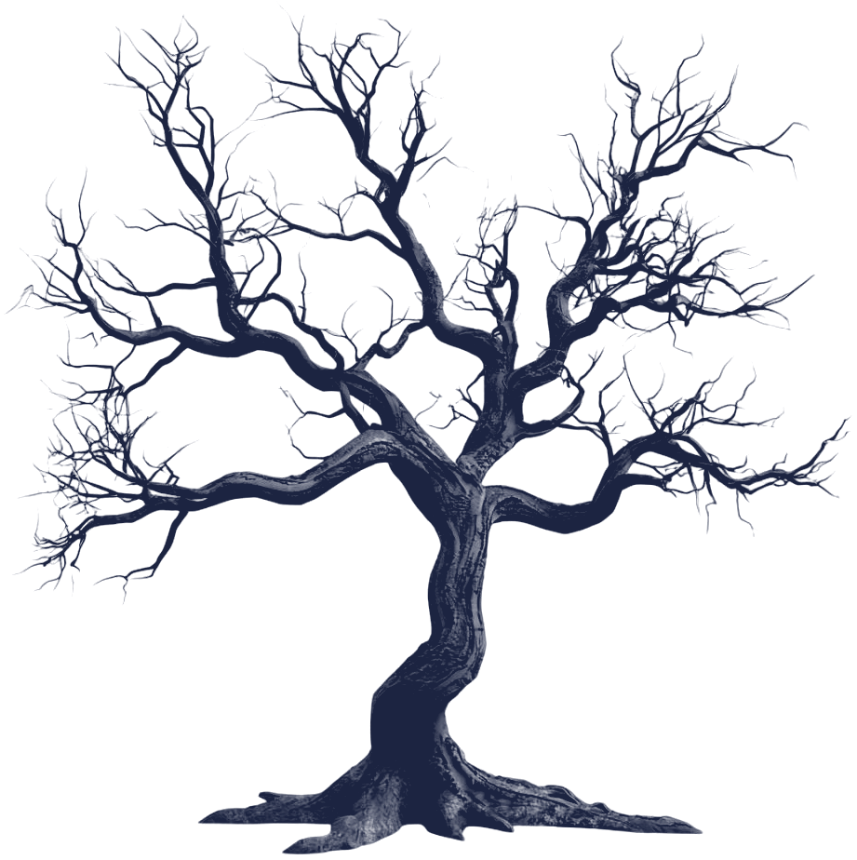

Tuve que canibalizar mi corazón para que deje de pedirme que emprenda viaje al bajo mundo, donde nos guardamos los que bebimos nuestras lágrimas. Recurrente y calamitoso, el panteón de mis deseos se objetó en huelga, indicándome el nicho vacío que llevaba mi nombre. Me demoré demasiado en conquistar la ciudad, Buenos Aires me quedó grande. A veces las cosas me quedan grandes, pero porque me empequeñezco ante mi miedo a ser olvidada. ¿Será que me hice tan pequeña para poder habitar en tus rincones? Amiga mía, mujer despreciable y bella, tengo un último favor que pedirte.
En tus llagas florecí yo,
encontrando los recovecos
en la carne viva
para embellecer el caos de tu pena.
Mis llagas estaban impías,
depuraban lamentos escabrosos,
los mismos que tuviste que
dar consuelo en tu pecho.
Pero ya habían sanado. Las bauticé con otro nombre. Igual que las de Cristo que, un domingo como éste, resucitó de entre los muertos.
Córdoba flamea campante, las calles austeras se vuelven pergamino en la distancia, el eco de las voces se cuela por las esquinas y los pasillos. Estoy sentada en una plaza, mirando un horizonte que me es ajeno, que me delata extranjera en mis propios pagos. Y, a vos que te gusta alimentarte de corazones inocentes, se te hizo excelso el condenarme en la ciudadela de la furia. Hay flores alrededor mío, se están secando. Vos siempre me pedís que no las arranque, pero, a mí no me preocupa.
Porque allá donde yo amé,
florecen semillas.
Germiné mis raíces a tu patio, el pasto alto me gusta, se siente mullido bajo mis pies descalzos.
Y acá estoy, mirla de mi suerte,
pensándome a tu derecha,
pero habitando el purgatorio.
Es este el purgatorio
de las aves.
Es la libertad que te ofrecí aquella vez,
pero el precio de la libertad
es una bala con mi nombre.
Es esta mi dedicatoria, entonces, donde te suplico que, como último favor: me leas.
Conocer tu tierra árida
me llenó de ideas.
fragmento — uno de cuarenta poemas

Cada rama sostiene algo que dejó el libro. Abre una para leer lo que pende de ella.
{{ c.body }}
Escribe de noche, cuando la ciudad baja la voz. Sus poemas reúnen lo que otros descartan: causas perdidas, despedidas a medias, el humo que se queda después de que el ave se ha ido.
«El purgatorio de las aves» es su primer recopilatorio: un cuaderno de madrugada para los que todavía no se rinden.
Cuarenta poemas para los desvelados. El PDF llega directo a tu correo después de la compra.
entrega digital · pago seguro · sin envío físico